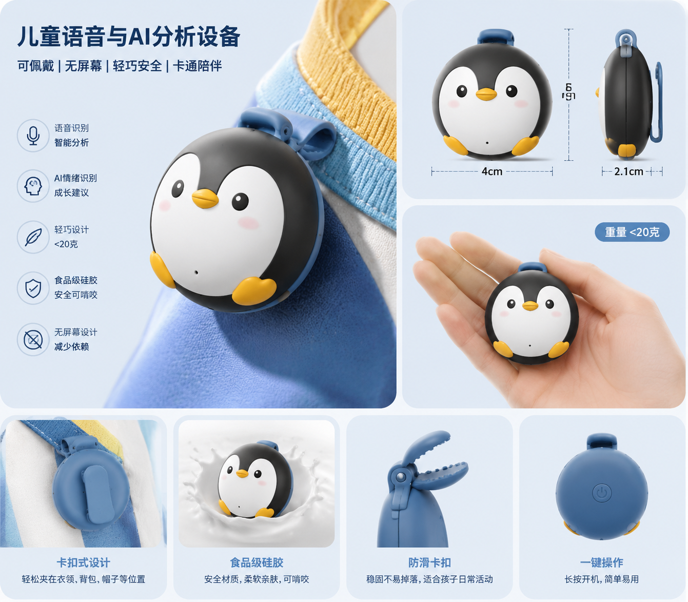

语芽 Talkseed
一款纽扣大小的可佩戴儿童语音记录设备，把家庭场景中的自然表达转化为语言成长曲线、阶段报告和陪伴建议。

想解决的问题
很多家长关心孩子“会不会说、说得好不好”，但日常很难持续、客观地观察孩子的语言发展。语芽希望把家长模糊的主观感受，转化为可回看、可比较、可长期追踪的语言成长记录。
语言爆发期
孩子词汇量和表达意愿变化快，家长希望更早发现发展信号。
学龄前阶段
孩子开始讲故事、复述绘本，表达完整度和逻辑顺序变得重要。
低年级阶段
入学后需要更清楚地表达想法，叙述能力和互动回应能力逐步显现。
产品是什么
语芽由一个可佩戴硬件和一个 App 组成。硬件负责在家庭授权场景中采集儿童自然表达，App 负责语音转写、AI 分析、成长报告和提升建议。
佩戴
扣在儿童衣领或胸口，靠近嘴部采集语音。
记录
家长在亲子对话、故事复述、旅行等场景按需开启。
同步
通过蓝牙或 Wi-Fi 将录音同步到 App。
分析
生成四维成长曲线、阶段总结和家庭陪伴建议。
目标用户及使用场景
| 类别 | 说明 | 为什么需要 |
|---|---|---|
| 核心用户 | 2-8 岁儿童家庭，尤其是关注语言发育、表达能力和入学准备的家长。 | 家长需要比“凭感觉判断”更稳定的观察方式。 |
| 典型场景 | 亲子对话、户外活动、旅行、绘本阅读、家庭游戏、故事复述。 | 这些场景更容易捕捉孩子真实、自然的语言表达。 |
| 不建议场景 | 幼儿园、学校等涉及老师、同学和公共隐私的环境。 | 产品需要清晰的隐私边界，避免被理解为监听设备。 |
四维语言成长曲线
App 可以按次、按周或按月生成总结，让家长不必每天盯数据，也能看见孩子表达能力的变化趋势。
观察孩子使用词汇的丰富度，以及新词出现的频率。
分析孩子是否能把想法组织成完整句子和连续叙述。
记录常见发音不清、表达含混等可持续观察的现象。
关注孩子是否能回应问题、主动表达、轮流对话。
把语音片段、转写文本和趋势变化整理为家长可读的总结。
给出亲子对话、复述练习、绘本互动等日常陪伴建议。
价值与意义
商业价值
语芽可以采用“硬件一次性付费 + App 分析订阅”的模式。硬件承担语音采集入口，订阅服务提供语音转写、成长曲线、阶段报告、建议生成和历史数据存储。
社会价值
语芽帮助家长更早、更具体地理解孩子的语言发展状态。对于表达能力较弱、语言发育稍慢或处在入学准备阶段的孩子，它提供一种温和的早期观察方式。
隐私与专业边界
儿童语音数据天然敏感，语芽的可行性不只来自硬件和 AI，也来自清晰的使用边界。
隐私边界
录音、转写文本和分析报告应由家长可见、可删、可管理。产品优先识别并提取儿童主声道语音，过滤明显无关语音；儿童声纹识别、多人语音分离和户外降噪仍是后续需要验证的能力。
诊断边界
AI 分析结果定位为发展参考，不直接给出医学诊断。如果出现疑似语言发育迟缓趋势，产品应建议家长咨询儿童保健科、语言治疗师或专业评估机构。